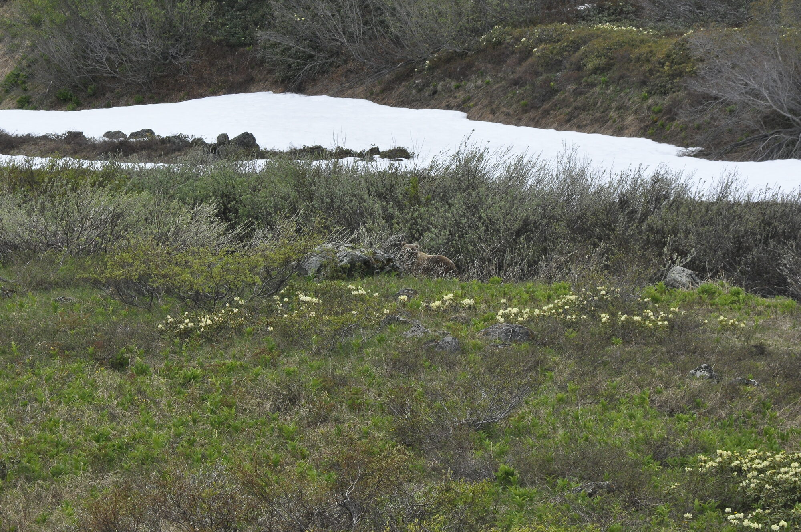

Research
Six research rubrics.
Rubrics
Research areas

Platinum-group minerals
I work on platinum-group elements not only as tracers of magmatic processes, but also as elements that can be redistributed during alteration, metamorphism, and fluid-rock interaction.

Layered intrusions
Layered intrusions are central to my current work on mafic-ultramafic systems, critical metals, and chromitite-bearing stratigraphy.

Chromitites
Chromitites are one of the main threads running through my research.

Melt-rock interaction
Many of the rocks I work on cannot be understood as closed systems.

Early Earth isotopes
I use stable isotopes to investigate water-rock interaction, crustal recycling, and near-surface conditions on the early Earth.

Arc magmas
Arc magmas provide one of the clearest ways to study how the mantle wedge is modified by subduction.